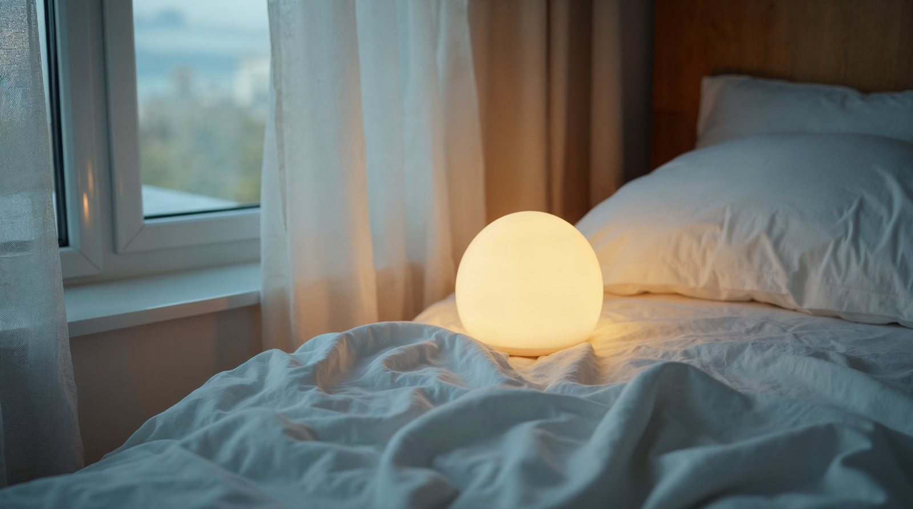
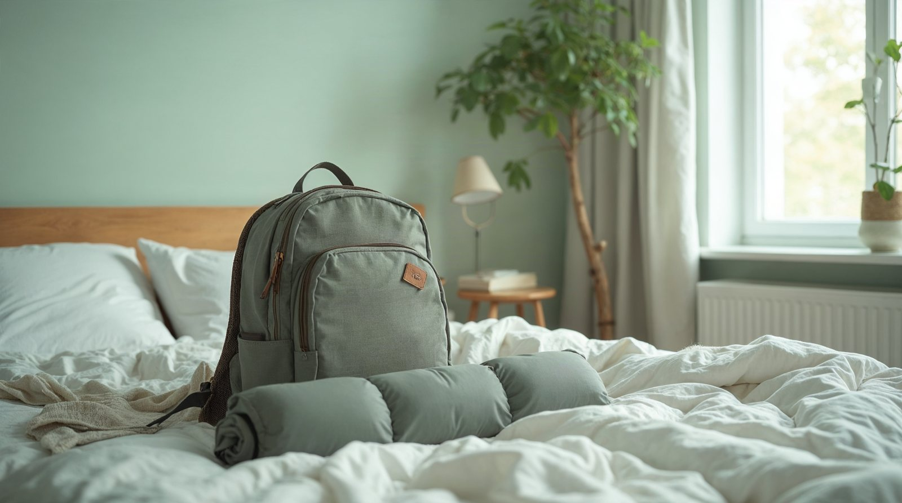
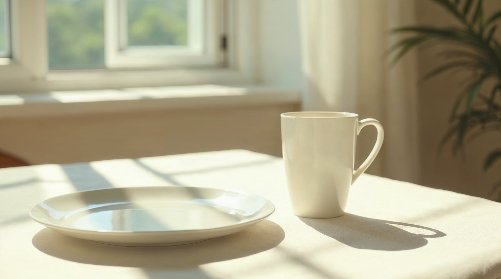
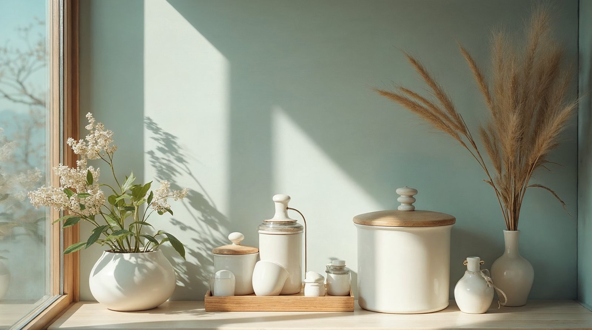
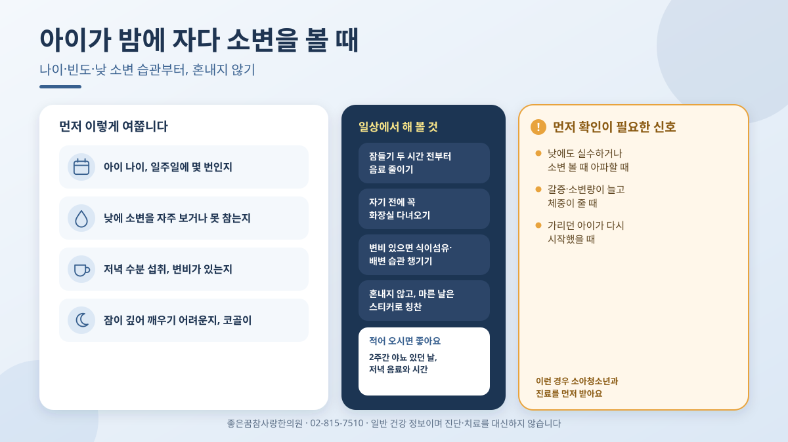

이종호 한의사 감수좋은꿈참사랑한의원 대표원장 (한의사 면허번호 19769)발행 2026-11-26 · 수정 2026-11-26
이 글의 차례
새벽 세 시, 아이가 울먹이며 방문을 엽니다. 이불이 젖었다고요. 불을 켜고 젖은 잠옷을 벗기고, 요를 걷어 세탁기에 넣고, 마른 이불을 다시 깔아 줍니다. 아이는 고개를 숙인 채 말이 없고, 보호자는 한숨을 삼킵니다. 내일 아침에도 출근해야 하니까요.
아이가 밤에 이불에 실수할 때 가장 먼저 기억해 주셨으면 하는 것은 이것입니다. 야뇨는 아이의 잘못도, 게으름도 아닙니다. 그래서 꾸짖지 않는 것이 첫걸음이고, 그다음에 아이의 나이와 일주일에 몇 번인지, 낮에도 실수가 있는지를 차분히 살펴봅니다.
다만 낮에도 소변을 지리거나, 소변 볼 때 아파하거나, 이미 몇 달 넘게 잘 가리던 아이가 갑자기 다시 시작했다면 순서가 달라집니다. 이럴 때는 한의원보다 소아청소년과나 비뇨의학과 진료를 먼저 받아 주세요.
진료실에서 보호자분들께 이런 말씀을 자주 듣습니다. 다른 집 아이들은 다 가리는데 우리 아이만 왜 그런지 모르겠다고요. 화내지 말아야 하는 걸 알면서도 새벽에 이불을 빨다 보면 저도 모르게 목소리가 커진다고, 그게 더 미안하다고 하시는 분도 계십니다.
아이도 압니다. 친구 집에 자러 가자는 말에 핑계를 대고, 수련회 안내문을 가방 깊숙이 넣어 두기도 합니다. 그 마음을 생각하면 야뇨는 이불 문제가 아니라 아이의 자존감 문제이기도 합니다. 보호자와 아이 모두 그동안 얼마나 마음을 졸였을까 싶습니다.
왜 밤에 소변을 가리기 어려울까요
밤에 소변을 가리려면 몇 가지가 함께 맞아떨어져야 합니다. 밤에는 소변이 덜 만들어지도록 몸이 조절하고, 방광이 밤새 소변을 담아 둘 만큼 넉넉해야 하며, 방광이 가득 찼을 때 그 신호에 잠에서 깰 수 있어야 하지요.
이 세 가지는 아이마다 자라는 속도가 다릅니다. 그래서 같은 나이라도 일찍 가리는 아이가 있고 늦게 가리는 아이가 있습니다. 일반적으로 만 5세가 넘어서도 밤에 자주 실수하면 야뇨증이라고 부르지만, 그 나이를 넘겨도 해마다 조금씩 저절로 가리게 되는 아이가 많습니다.
부모 중 한 사람이 어릴 때 야뇨가 있었다면 아이도 늦게 가리는 경우가 많다고 알려져 있습니다. 보호자께 어릴 적 기억을 여쭙는 것도 그 때문입니다. 아이가 유난스러운 것이 아니라 집안의 몸 리듬을 닮았을 수 있습니다.
한의학에서는 소변을 담고 내보내는 일을 아랫배의 따뜻한 기운과 연결해 봅니다. 몸이 차고 소화가 약한 아이, 쉽게 지치는 아이에게서 밤 소변을 가누는 힘이 늦게 자란다고 보고 체온과 소화를 함께 살핍니다.
야뇨를 잦게 만드는 생활의 조각들
저녁 식사 뒤에 우유나 주스, 국물을 많이 먹는 날, 잠들기 직전까지 물을 마신 날에는 실수가 잦아지곤 합니다. 짠 저녁을 먹으면 물을 더 찾게 되지요.
변비도 생각보다 자주 얽혀 있습니다. 대장에 변이 오래 차 있으면 바로 옆의 방광을 눌러 소변을 담는 공간이 좁아질 수 있습니다. 그래서 야뇨로 오신 아이에게 대변 이야기를 꼭 여쭙습니다.
잠이 너무 깊은 아이도 있습니다. 흔들어 깨워도 잘 깨지 않고, 깨워서 화장실에 데려가도 다음 날 기억을 못 하는 아이들이지요. 반대로 코를 심하게 골고 자다 숨을 멈추는 것 같은 아이도 밤 소변이 잦아질 수 있어 이비인후과 확인이 필요합니다.
학교에서 화장실 가기를 꺼려 하루 종일 소변을 참는 아이도 있습니다. 쉬는 시간이 짧거나 화장실이 낯설어서지요. 낮에 참는 버릇이 들면 방광이 예민해져 밤에도 영향을 줄 수 있어, 낮에 몇 번 화장실에 가는지도 함께 여쭙습니다.
아이들은 불편한 것을 생각보다 말하지 않고 참는 경우가 많습니다. 그래서 진료실에서는 아이에게 학교 화장실은 편한지, 쉬는 시간에 갈 수 있는지를 직접 물어보기도 합니다.

야뇨를 나누어 보는 기준
야뇨라고 다 같은 야뇨는 아닙니다. 저는 처음 듣는 자리에서 아래 두 가지를 먼저 나눕니다. 이 구분에 따라 어디서 먼저 확인할지가 달라지기 때문입니다.
- 한 번도 밤에 오래 가려 본 적이 없는 경우: 몸의 조절이 아직 자라는 중인 경우가 많습니다. 생활 습관을 함께 살피며 지켜볼 수 있습니다.
- 여섯 달 넘게 잘 가리다가 다시 시작한 경우: 요로 감염, 당뇨, 변비, 그리고 이사·입학·동생의 탄생 같은 마음의 변화를 먼저 확인합니다.
- 밤에만 실수하는 경우와 낮에도 지리는 경우: 낮에도 지리거나 소변을 자주 참지 못한다면 방광 기능이나 감염을 먼저 확인해야 합니다.
갈증이 심해 물을 많이 찾고 소변량이 크게 늘었으며 몸무게가 줄고 있다면 당뇨를 떠올려야 합니다. 이럴 때는 미루지 말고 소아청소년과에서 바로 확인을 받으세요.
예를 들면 이런 경우입니다
실제 어느 아이의 이야기가 아니라, 진료실에서 자주 보는 모습을 바탕으로 그려 본 장면입니다.
예를 들어 초등학교 1학년인데 일주일에 서너 번 실수하고, 한 번도 오래 가려 본 적이 없는 경우가 있습니다. 낮에는 문제가 없고 잠이 아주 깊은 편이라면, 저녁 수분과 잠드는 시각, 대변부터 함께 적어 보시도록 말씀드립니다.
예를 들어 1년 가까이 잘 가리던 아이가 동생이 태어나고 이사를 한 뒤 다시 실수하기 시작한 경우도 있습니다. 먼저 소아청소년과에서 소변 검사 등으로 몸의 원인을 확인하시도록 하고, 아이가 요즘 마음에 담아 둔 이야기가 없는지 보호자와 함께 살핍니다.
예를 들어 변비가 있어 사나흘에 한 번 힘들게 대변을 보는 아이가 밤에도 자주 실수하는 경우가 있습니다. 이럴 때는 야뇨보다 대변을 먼저 편하게 하는 데서 시작해 보기도 합니다. 두 가지가 같이 얽혀 있는 아이가 생각보다 많습니다.

수련회나 친구 집 외박을 앞두고
야뇨가 있는 아이에게 가장 큰 걱정은 집 밖에서 자는 날입니다. 그 걱정 때문에 즐거운 일을 피하게 되면, 아이에게는 이불보다 그 기억이 더 오래 남습니다.
이럴 때는 아이와 미리 작전을 짜 보세요. 잠옷 안에 입을 수 있는 야간용 속옷, 비닐 주머니와 갈아입을 옷을 가방에 넣고, 담임 선생님이나 인솔 교사께 조용히 미리 알려 두는 방법도 있습니다. 아이가 혼자 감당하지 않아도 된다는 것을 알면 마음이 한결 가벼워집니다.
스스로 점검해 보세요
- 만 5세가 넘었는데 일주일에 두 번 넘게 밤에 실수한다
- 한 번도 여섯 달 넘게 밤에 가려 본 적이 없다
- 저녁 식사 뒤 음료를 많이 마시는 편이다
- 대변을 사흘 넘게 못 보는 날이 많다
- 흔들어 깨워도 잘 깨지 않을 만큼 잠이 깊다
- 손발과 아랫배가 차고, 쉽게 지친다
- 야뇨 때문에 외박이나 수련회를 피한 적이 있다
점수를 매기려는 목록은 아닙니다. 표시한 줄을 보여 주시면 그 줄부터 이야기를 시작하겠습니다.
먼저 이렇게 여쭙니다
보호자께서 기억나는 대로 말씀해 주시면 됩니다. 아이 앞에서 말씀하시기 곤란한 이야기는 아이가 잠깐 밖에 있을 때 따로 여쭙겠습니다.
- 아이는 몇 살이고, 일주일에 몇 번쯤 실수하나요? 하룻밤에 한 번인가요, 여러 번인가요?
- 한 번이라도 여섯 달 넘게 가린 적이 있나요? 있다면 언제부터 다시 시작했나요?
- 낮에도 소변을 지리거나, 급하게 화장실로 뛰어가거나, 소변 볼 때 아파하나요?
- 저녁 식사 뒤 무엇을 얼마나 마시나요? 대변은 며칠에 한 번 보나요?
- 깨우면 잘 깨나요? 코를 골거나 자다 숨을 멈추는 것 같나요?
- 보호자 중 어릴 때 야뇨가 있던 분이 있나요?
아이에게도 직접 묻습니다. 밤에 깨면 화장실 가기가 무서운지, 친구 집에 자러 가고 싶은지 같은 것들이요. 아이의 대답에서 보호자도 몰랐던 걱정이 나오기도 합니다.

일상에서 먼저 해 볼 수 있는 것
가장 먼저, 실수한 날 혼내지 않는 것입니다. 꾸중은 아이를 긴장하게 만들고, 긴장은 잠과 소변 조절을 더 어렵게 합니다. 대신 마른 아침에 크게 기뻐해 주세요.
- 물은 오전과 낮에 충분히 마시고, 잠들기 1~2시간 전부터는 음료를 줄이기
- 저녁은 너무 짜지 않게, 잠들기 직전 우유·주스·탄산음료는 피하기
- 잠자리에 들기 직전에 화장실 다녀오기를 이 닦기처럼 순서로 만들기
- 변비가 있다면 물과 채소, 아침 식사 뒤 화장실에 앉는 시간을 함께 챙기기
- 밤에 화장실 가는 길에 작은 불을 켜 두어 무섭지 않게 하기
- 마른 날은 달력에 스티커를 붙여 칭찬하고, 젖은 날은 아무 말 없이 넘어가기
방수 매트와 갈아입을 잠옷을 머리맡에 두면 아이가 혼자 정리할 수 있어 마음이 덜 무겁습니다. 이불 정리를 벌로 시키는 것이 아니라, 스스로 할 수 있다는 느낌을 주는 정도면 충분합니다.
형제나 친척 앞에서 야뇨 이야기를 꺼내지 않는 것도 중요합니다. 농담처럼 한 말이 아이에게는 오래 남습니다. 집안의 약속으로 정해 두시면 아이가 한결 마음을 놓습니다.
밤중에 억지로 깨워 화장실에 데려가는 방법은 아이와 보호자 모두의 잠을 깎을 수 있습니다. 하더라도 아이가 완전히 깬 상태에서 스스로 걸어가게 하는 편이 좋습니다. 아이마다 맞는 방법이 다르니 진료 때 함께 정해 보세요.

한의원에서 함께 살필 수 있는 경우
- 소아청소년과나 비뇨의학과에서 큰 이상은 없다고 들었지만 야뇨가 이어지는 경우
- 잠이 깊고 손발이 차며, 소화가 약하거나 쉽게 지치는 아이
- 변비가 함께 있고 아랫배가 늘 차가운 아이
- 야뇨 때문에 아이가 위축되어 수련회나 친구 집 외박을 피하는 경우
좋은꿈참사랑한의원에 아이와 처음 오시면 먼저 보호자의 이야기를 충분히 듣고, 아래 확인이 필요한 신호가 있는지부터 봅니다. 받으신 소변 검사나 진료 기록, 드시는 약이 있다면 가져와 주세요.
그다음 아이에게 무엇을 할지 쉬운 말로 설명하고 맥을 짚습니다. 필요하다고 판단되면 혀를 보고, 아이가 괜찮다고 할 때 배를 살핍니다. 잠과 식사, 대변, 손발의 온도는 보호자께 함께 여쭙습니다.
이렇게 살핀 내용을 바탕으로 생활에서 먼저 바꿀 것과, 침이나 한약 상담이 필요한지를 보호자와 함께 정합니다. 아이가 무서워하는 방법은 억지로 하지 않습니다. 한약은 아이의 나이와 체중, 드시는 약을 확인한 뒤에 상의하며, 원내 탕전실에서 대표원장이 약재를 검수해 달입니다.
다시 오시면 지난번 이후 마른 밤이 며칠이었는지, 저녁 수분과 대변은 어땠는지부터 이어서 여쭙습니다. 숫자보다 아이의 표정이 어땠는지도 함께 듣고 싶습니다.
이렇게 기록해 오시면 상담이 쉬워집니다
2주만 달력에 적어 보세요. 아이와 함께 스티커로 표시하면 기록이 놀이가 됩니다. 아이와 함께 보는 달력에는 마른 날에만 스티커를 붙이고, 젖은 날은 보호자 수첩에만 적어 두면 아이가 주눅 들지 않습니다.
- 마른 밤과 젖은 밤, 젖었다면 깨서 알렸는지 아침에 알았는지
- 저녁 식사 시각과 그 뒤 마신 음료의 종류와 양
- 잠든 시각과 일어난 시각, 코골이가 있었던 밤
- 낮 동안 소변 본 횟수, 대변을 본 날과 모양
- 그 주에 있었던 일(시험, 행사, 이사, 가족의 변화)
소아청소년과나 비뇨의학과 진료 기록과 복용 중인 약이 있다면 함께 가져와 주세요. 초등학생 아이의 이야기는 초등학생이 되었는데 아직 밤에 이불에 실수할 때는 어떻게 살피나요?에도 정리해 두었습니다.
잠드는 시각이 늦어 밤이 짧은 아이라면 아이가 휴대폰을 보다가 밤늦게 잠들 때는 어떻게 바꿔 갈 수 있을까요?를 함께 보셔도 좋습니다.
코골이가 심하다면 아이가 자면서 코를 골고 입으로 숨 쉴 때는 어떻게 살피나요?도 참고해 주세요.
이런 증상은 먼저 확인이 필요합니다
- 낮에도 소변을 지리거나, 소변을 너무 자주 보거나 급하게 참지 못하는 경우
- 소변 볼 때 아파하거나, 소변에 피가 비치거나, 열이 함께 나는 경우
이런 신호가 있으면 한의원보다 가까운 병원이나 응급실을 먼저 찾으세요.
새벽에 젖은 이불을 걷으며 한숨을 삼켜 온 보호자도, 고개를 숙였던 아이도 충분히 애썼습니다. 마른 밤은 하루아침에 오지 않지만, 아이는 자랍니다. 그 사이 아이가 덜 움츠러들도록 함께 살피겠습니다. 다음에 오시면 지난 2주 동안 마른 밤이 며칠이었는지부터 여쭙겠습니다.

여쭙는 것
- 아이는 몇 살이고, 일주일에 몇 번쯤 실수하나요? 하룻밤에 한 번인가요, 여러 번인…
- 한 번이라도 여섯 달 넘게 가린 적이 있나요? 있다면 언제부터 다시 시작했나요?
- 낮에도 소변을 지리거나, 급하게 화장실로 뛰어가거나, 소변 볼 때 아파하나요?
생활에서 해 볼 것
- 물은 오전과 낮에 충분히 마시고, 잠들기 1~2시간 전부터는 음료를 줄이기
- 저녁은 너무 짜지 않게, 잠들기 직전 우유·주스·탄산음료는 피하기
- 잠자리에 들기 직전에 화장실 다녀오기를 이 닦기처럼 순서로 만들기
한의원에서 함께 살필 것
- 소아청소년과나 비뇨의학과에서 큰 이상은 없다고 들었지만 야뇨가 이어지는 경우
- 잠이 깊고 손발이 차며, 소화가 약하거나 쉽게 지치는 아이
- 변비가 함께 있고 아랫배가 늘 차가운 아이
먼저 확인이 필요한 신호
- 낮에도 소변을 지리거나, 소변을 너무 자주 보거나 급하게 참지 못하는 경우
- 소변 볼 때 아파하거나, 소변에 피가 비치거나, 열이 함께 나는 경우
한눈에 보는 표
| 구분 | 핵심 |
|---|---|
| 여쭙는 것 | 아이는 몇 살이고, 일주일에 몇 번쯤 실수하나요? 하룻밤에 한 번인가요, 여러 번인가요? 한 번이라도 여섯 달 넘게 가린 적이 있나요? 있다면 언제부터 다시 시작했나요? |
| 생활에서 해 볼 것 | 물은 오전과 낮에 충분히 마시고, 잠들기 1~2시간 전부터는 음료를 줄이기 저녁은 너무 짜지 않게, 잠들기 직전 우유·주스·탄산음료는 피하기 |
| 한의원에서 함께 살필 것 | 소아청소년과나 비뇨의학과에서 큰 이상은 없다고 들었지만 야뇨가 이어지는 경우 잠이 깊고 손발이 차며, 소화가 약하거나 쉽게 지치는 아이 |
| 먼저 확인이 필요한 신호 | 낮에도 소변을 지리거나, 소변을 너무 자주 보거나 급하게 참지 못하는 경우 소변 볼 때 아파하거나, 소변에 피가 비치거나, 열이 함께 나는 경우 |
자주 묻는 질문
야뇨증은 몇 살부터 진료를 받아 보는 게 좋나요?
일반적으로 만 5세가 넘어서도 밤에 자주 실수하면 확인해 볼 만합니다. 다만 나이보다 아이가 얼마나 불편해하는지, 낮에도 증상이 있는지가 더 중요합니다. 낮 증상이나 통증이 있다면 소아청소년과나 비뇨의학과를 먼저 찾아 주세요.
밤에 깨워서 화장실에 데려가면 도움이 되나요?
아이마다 다릅니다. 억지로 깨우면 아이와 보호자 모두 잠이 부족해질 수 있어, 한다면 아이가 완전히 깬 상태에서 스스로 걷게 하는 편이 좋습니다. 진료 때 아이에게 맞는 방법을 함께 정합니다.
혼내면 안 되나요?
야뇨는 아이가 마음먹는다고 조절되는 일이 아닙니다. 꾸중은 긴장을 키워 오히려 어렵게 할 수 있어, 젖은 날은 담담하게 넘기고 마른 날을 칭찬해 주시길 권합니다.
한의원에서는 어떻게 살피나요?
저녁 수분과 대변, 잠의 깊이, 체온과 소화를 함께 여쭙고 맥을 짚어 아이 몸의 리듬을 살핍니다. 생활에서 바꿀 것부터 정하고, 침이나 한약 상담은 나이와 상태에 맞춰 신중하게 정합니다.
좋은꿈참사랑한의원은 재진 때 지난번 이야기부터 이어서 여쭙니다. 진료시간과 예약은 오시는 길에서 확인하세요.
어디서 상담받을 수 있나요?
좋은꿈참사랑한의원은 서울 동작구 만양로2길 2 신성빌딩 3층·5층(서울 동작구 상도동, 7호선 상도역 3번 출구 근처)에 있습니다. 한의사 3명(이종호 대표원장, 조영기 수석진료원장, 정원영 진료원장)이 진료합니다. 진료시간은 평일 09:30~20:00(점심 13:00~14:00), 토·일·공휴일 09:30~15:00이며, 방문 전 전화로 확인을 권합니다. 예약은 네이버 예약, 카카오톡 상담, 전화 02-815-7510로 받습니다.
이 글은 일반적인 건강 정보이며 개인의 진단이나 치료를 대신하지 않습니다. 증상이 있거나 복용 중인 약이 있다면 진료를 통해 확인하세요. 치료 효과는 개인마다 다를 수 있습니다.
작성 기준: 일반적으로 알려져 있는 건강 정보를 참고해 정리했습니다(대표원장 감수). 증상 기록은 1~2주 동안 하루 1회, 비슷한 시간에 적어 오시면 지난 상태와 비교하기 쉽습니다.